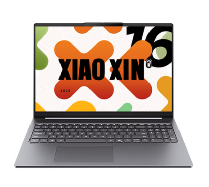

Giá, cân nặng và ảnh máy
Đây là thông tin cửa hàng đăng. Ảnh có bàn phím số, nhưng màu và cảm giác gõ cần xem thật.
Nhẹ để mang theo. Thuận tay nhập số.
Chọn laptop cho công việc kế toán, bắt đầu từ những điều bạn cần mỗi ngày.

Giá quan sát trên website cửa hàng.
Chưa phải báo giá cam kết hay xác nhận tồn kho.
Chọn nhiều điều bạn cần trong một ngày.
Mỗi tiêu chí sẽ có lý do riêng cho từng máy.
✓ Chọn được nhiều tiêu chí cùng lúc.
Tích tất cả những điều đúng với bạn, ở cả 4 nhóm. Không giới hạn số lựa chọn; chọn lại một ô để bỏ.
Mỗi lần mở web đều bắt đầu chưa chọn tiêu chí nào. Hãy chọn đúng nhu cầu của mình; không cần tích hết nếu không cần.
Chọn được nhiều gợi ý cùng lúc, không thay thế lựa chọn trước. Nhóm đủ tiêu chí sẽ có dấu ✓; dấu − là đã chọn một phần.
Bấm nhóm chưa đủ để thêm tiêu chí; bấm nhóm đã đủ để bỏ các tiêu chí của nhóm đó. Một số nhóm trùng tiêu chí nên trạng thái có thể thay đổi cùng nhau. Mỗi tiêu chí chỉ tính một lần; chỉnh từng ô ở dưới theo ý Hà Anh.
Xem máy nào đáng tìm hiểu trước ↓Numpad trên hàng thật và pin đáp ứng nhu cầu vẫn là điều kiện cần xác nhận. Trần tuyệt đối luôn dưới 23 triệu. Phụ phí là giả định bạn nhập, không phải giá nâng cấp đã khảo sát.
Nếu chọn một điều quan trọng nhất, web xét trước các máy có điểm thuận lợi ở điều đó, rồi so số điểm thuận lợi còn lại. Nếu chưa đủ dữ liệu ở ưu tiên này, web nói rõ và giữ cách so tổng. Khi chưa chọn ưu tiên riêng, mỗi tiêu chí được tính ngang nhau. Web đưa các máy trong ngân sách có nhiều điểm thuận lợi từ thông tin hiện có lên trước; ngang nhau thì giữ đồng hạng. Số shop công bố và ảnh chỉ là cơ sở tham khảo. Điều chưa xác nhận không được tự coi là đáp ứng.
Chọn nhiều hơn giúp lời giải thích sát nhu cầu hơn, không làm thông số thiếu bằng chứng trở nên chắc chắn hơn.
Khoảng hẹp hơn nghĩa là bớt thiếu dữ liệu, không có nghĩa là máy tốt hơn. Điểm là mô hình sở thích, không phải xác suất hài lòng hay khuyến nghị mua.
Chuẩn hóa trọng số theo tổng. Điểm giá = (23 triệu − giá máy) / 5 triệu × 100; điểm nhẹ = (2,2 kg − cân nặng) / 0,9 kg × 100, giới hạn 0–100. Các mốc này là lựa chọn thiết kế để bạn so tương đối, không phải chuẩn ngành. Giá tính riêng; phụ phí dùng lọc tổng chi phí.
Pin thực tế, bảo hành và nâng cấp chưa đủ dữ liệu nên giữ khoảng 0–100 theo trọng số. Ngoại hình chỉ dùng điểm bạn tự chấm. Không lấy 50 Wh để giả làm điểm thời lượng pin. Không công bố máy thắng khi điều kiện bắt buộc chưa xác minh.
Nếu muốn nhẹ hơn: SE và 16c được shop ghi 1,68 kg, H255 là 1,81 kg — chênh 130 g. Cần cân máy kèm sạc để biết hành lý thực tế.
Nếu muốn dùng lâu: cả ba cùng được ghi 50 Wh. Chưa có bài đo đồng điều kiện, nên chưa thể xếp hạng thời lượng pin.
Nếu muốn tối ưu tiền: 16c đang có giá thấp nhất. Cần giải quyết tên CPU và sai khác màn hình trước khi đánh giá giá trị mua.
Web giúp Hà Anh tìm máy để xem trước. Muốn biết dùng có hợp không, vẫn cần thử chiếc máy định mua.
Đây là thông tin cửa hàng đăng. Ảnh có bàn phím số, nhưng màu và cảm giác gõ cần xem thật.
Chưa có bài thử để biết máy nào lâu hết pin hơn, hay chạy tốt file Excel của Hà Anh hơn.
16c: hỏi lại màn hình và cấu hình. Xiaoxin 16 (2025): hỏi lại kích thước và cổng cắm. Cả ba: hỏi máy lỗi mang tới đâu, chờ bao lâu.
Thấy máy được gợi ý? Hãy mở ảnh, đọc lý do rồi chọn máy muốn đến thử. Gợi ý trên web chưa phải lời khẳng định “máy này hợp nhất”.
Xem 3 việc nên thử trước khi mua ↓Hai chế độ dùng cùng hồ sơ nguồn. “Đã đọc được trên web” chưa có nghĩa là đã kiểm chứng chiếc máy được giao.
Bản dễ hiểu đếm các điểm thuận lợi theo nhu cầu; bản chuyên sâu dùng trọng số và khoảng điểm. Đây là hai cách xem khác nhau, không phải hai bảng xếp hạng tương đương. Ban đầu chưa chọn nhu cầu; 6 trọng số chuyên sâu ngang nhau, không tự nhận số cân shop hoặc chấm kiểu dáng.
Mở ảnh lớn → chọn cảm nhận → xem gợi ý.
Chọn cảm nhận dưới mỗi ảnh để thêm tiêu chí kiểu dáng vào gợi ý. Đây là sở thích của Hà Anh; cảm giác gõ và màu thật cần đến xem máy.
Ảnh quảng cáo từ cửa hàng, chưa phải chiếc máy được giao. Cả ba ảnh có cụm phím số; độ lớn của máy trong ảnh không dùng để so kích thước thật.
Ảnh chính đã được xem trực tiếp trên ba trang bán. Ảnh quảng cáo có thể dùng chung giữa cấu hình hoặc màu; chưa có ảnh chiếc máy thực tế gắn MTM/serial. Màu qua ảnh không chứng minh độ sáng bề mặt, độ bám bẩn hoặc độ dễ đọc phím trong phòng.
H255 dùng Zen 4; Ryzen 7 170 trên AMD dùng Zen 3+. Core 5 320 là Series 3, 2P + 4 LPE, không phải i5 đời 3. 8C/16T và 6C/6T chỉ là topology, không đủ để kết luận tốc độ Excel.
AMD công bố dải 35–54 W cho hai chip; Intel công bố base/turbo 15/35 W. Đây là thông số khác khái niệm; không so trực tiếp để suy ra máy mát, im hay tiết kiệm pin hơn. Chưa biết giới hạn điện firmware/tản nhiệt.
Chưa có bài đo trên cùng workbook, phiên bản Excel, chế độ nguồn và RAM. Không gán điểm hiệu năng hoặc phần trăm hơn kém.
16 GB là dung lượng niêm yết chung. Mức đủ dùng phụ thuộc workbook, Power Query, Data Model, phần mềm kế toán và số tab trình duyệt. Không có tệp công việc mẫu nên chưa xác nhận “thoải mái”.
Kịch bản kiểm tra: mở đồng thời các ứng dụng thực dùng, refresh dữ liệu và recalculate workbook; theo dõi working set, committed memory, paging và thời gian hoàn tất. Nếu áp lực RAM cao, yêu cầu nâng cấp và báo giá trước khi chốt.
Không xác nhận khe RAM qua tên thương mại. Với 16c, dòng “DDR5X 5600 / 8 hàn + 8 rời” cần manual đúng MTM. Đổi tên IdeaPad không chứng minh tương đương phần cứng.
120 Hz và 100% sRGB là thông số niêm yết của H255; 60 Hz/45% NTSC ở SE. Dải màu không phải thước đo độ dễ đọc Excel. Cần kiểm tra cỡ chữ/scaling, phản chiếu, độ sáng thực, PWM và bố trí phím.
Quan sát ảnh thấy numpad trên cả ba, chưa biết bề rộng phím số, hành trình, vị trí dấu thập phân hoặc đèn nền. Nên nhập thử 5–10 phút bằng đúng thói quen của người dùng.
H255 có dòng Gen 2/20 Gbps/Thunderbolt 4 cần làm rõ. Không bảo đảm USB4, TB4, PD hay DisplayPort chỉ từ hình cổng. Xin manual, thử đúng dock, màn và sạc định dùng.
Windows/Office là tuyên bố của shop; chưa có giấy phép hoặc thông tin edition/language. Kiểm tra kích hoạt, quyền cài tiếng Việt/Anh, driver theo MTM, BIOS và khả năng khôi phục trước khi dùng cho công việc.
Chỉ minh họa công thức năng lượng. Không phải dự báo cho ba máy.
Shop ghi bảo hành máy 12 tháng, pin và sạc 6 tháng. Lỗi nặng có thể gửi về Trung Quốc. Hãy hỏi nơi nhận máy và thời gian sửa trước khi mua.
Chính sách shop nêu máy 12 tháng, pin và sạc 6 tháng; lỗi nặng có thể gửi về trung tâm tại Trung Quốc, shop chịu phí vận chuyển hai chiều. Chưa thấy thời hạn xử lý tối đa hoặc cam kết máy mượn.
Nếu “không phụ thuộc bên thứ ba” nghĩa là tự mang tới Lenovo Việt Nam và được nhận theo serial, hiện chưa mẫu nào có bằng chứng đáp ứng. Nếu nghĩa là shop tự chịu trách nhiệm, cần xác nhận bằng văn bản quy trình, đơn vị sửa và thời hạn.
Trang SE, 16c và chính sách ghi sảnh B, Bluegem Tower, Thanh Trì. Trang H255 hiện cũng ghi cùng địa chỉ trong lần kiểm tra này; ghi chú mâu thuẫn địa chỉ cũ đã được sửa.
Chưa xác minh giờ nhận máy, tình trạng hoạt động hoặc địa điểm Lenovo nhận đúng serial. Không tự chấm “thuận tiện nội thành”.
Tra điều kiện IWS Lenovo China ↗1. Mang thử: Cầm máy kèm sạc, xem có vừa túi không.
2. Làm thử: Mở file Excel của bạn, gõ cụm phím số và nhìn chữ.
3. Hỏi rõ: Dùng pin được bao lâu với công việc của bạn? Máy lỗi mang tới đâu, chờ bao lâu?
Xin MTM, ảnh tem và ảnh bàn phím hàng thực; đối chiếu BIOS/CPU-Z, EDID/panel và topology RAM. Giữ serial ở kênh riêng.
Chạy Excel/phần mềm kế toán thực dùng; cùng độ sáng, chế độ nguồn, Wi-Fi và chu kỳ pin. Ghi giờ, mức pin đầu/cuối, tiếng quạt và nhiệt vùng kê tay.
Cân cả máy, sạc, dây; thử numpad, chữ trên phím, kê tay và kích thước túi. Chụp mặt B/C dưới ánh sáng phòng làm việc.
Tra IWS theo serial và hỏi Lenovo Việt Nam; xác nhận nơi tiếp nhận, pin/sạc, điểm chết, thời hạn sửa, đổi trả, vận chuyển và chi phí nâng cấp.
Ngày truy cập: 18/10/2026 (Asia/Saigon). Dữ liệu là ảnh chụp thông tin tại thời điểm kiểm tra, không tự cập nhật. Nguồn hãng tham chiếu chưa được gán thành thông số đã xác nhận của hàng bán. Không có quan hệ tài trợ với cửa hàng.
Mỗi thông số trở thành một task: kiểm tra nguồn, gán nhãn và ghi chú. Xuất task + cấu hình XML, import vào instance Label Studio của bạn; JSON annotation xuất ngược có thể xem ở đây. Nhãn của người đánh giá không tự trở thành bằng chứng hãng.
Labelstud.io là trang giới thiệu. Kết nối Codex hoặc tạo project cần instance đang chạy. Nhúng toàn bộ giao diện tùy biến bằng ReactCode thuộc Enterprise; bộ review XML này không yêu cầu ReactCode.